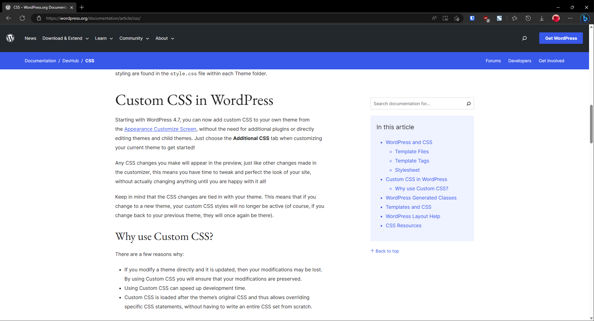
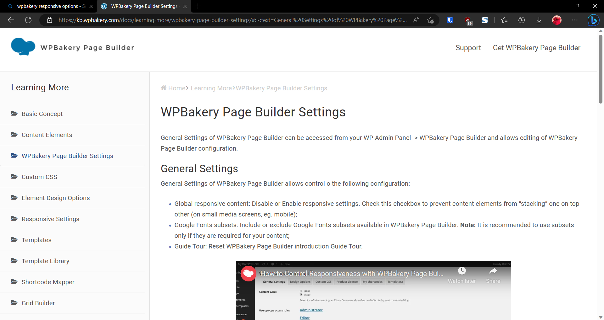
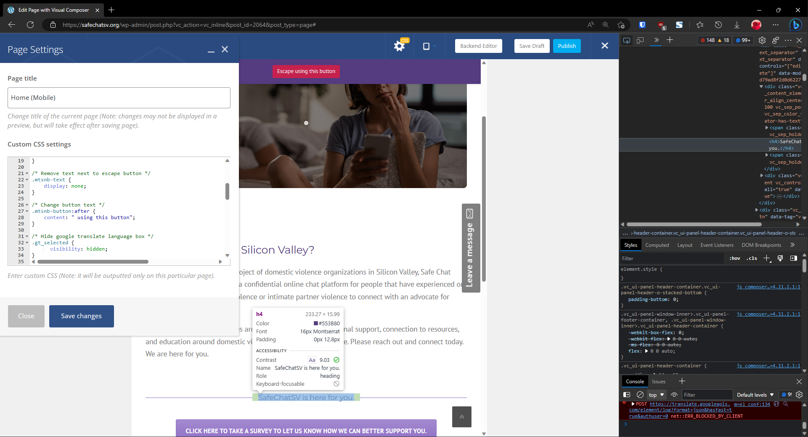

ENGR101 eFolio
Home
About Me
Project
Partner
Personal
Personal Contributions
Researched the basics of how to use Wordpress


Researched how to use WPBakery to create a mobile-responsive website
Added custom CSS code to home page
